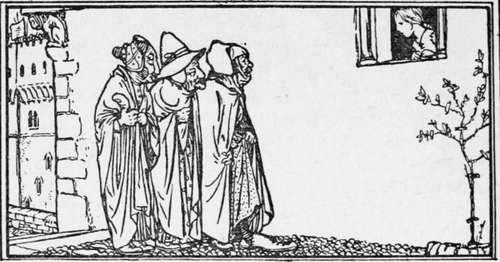

The Three Spinning Fairies
Description
This section is from the book "Household Tales by Brothers Grimm", by Brothers Grimm. Also available from Amazon: Household Tales by Brothers Grimm.
The Three Spinning Fairies
There was once upon a time a girl, who was lazy and hated work, and nothing her mother could say would induce her to spin. At last the mother grew angry, and losing all patience with her, gave her a beating. At this, the girl began to cry so loudly, that the queen who was driving past at the time, heard her cries and stopped.
She went into the house and asked the mother why she was beating her daughter like that; "her screams," she said, "can be heard outside in the street."
The mother was ashamed to confess the truth about her daughter's laziness, and so she answered:
"I cannot get her to leave off spinning; she is for ever at her wheel, and I am too' poor to keep on buying her fresh flax."
"If that is all," said the queen, "there is nothing I like so much as the sound of spinning, and I am never happier than when I can hear the humming of the wheels; let me have your daughter, and I will take her home with me to the castle. I have plenty of flax, and she can go on spinning there to her heart's content."
The mother was heartily pleased at this proposal, and so the queen left, taking the girl with her. On their arrival at the castle, she took her upstairs and showed her three rooms, filled from floor to ceiling with the most beautiful flax.
"Spin me all this," said the queen, "and when it is finished, you shall have my eldest son for your husband; your poverty is not a matter of any consequence to me for I consider that your unremitting industry is an all sufficient dowry."
The girl dared not say anything, but she inwardly trembled with fear, for she knew that she could never spin all that flax, were she to sit at her spinning-wheel from morning till night for three hundred years. As soon as she was alone, she began to weep, and she sat like that for three days, without doing a stroke of work.
When the queen came again on the third day, she was surprised to find that the flax had not been touched. The girl excused herself by saying that she had felt so lonely and homesick, that she had not been able to begin her spinning. The queen was satisfied with this excuse, but as she was leaving, she said: "To-morrow, mind, I shall expect you to begin your work."
Alone once more, the girl was at her wits' end to know what to do, and in her distress of mind went and looked out of the window. There she saw three funny looking women coming towards her; one had a big flat foot, another a large under-lip that hung over her chin; and the third a very broad thumb. They stood still under the window, and looking up, asked the girl what was the matter. She told them her trouble, and they offered to help her. "If you will invite us to your wedding," they said, " and will not be ashamed of us, but introduce us as your cousins, and let us sit at your table, we will soon spin all that flax for you."
"That I will gladly promise," said the girl, "if you will but come in and begin working for me at once."
So she let in the three women, and queer little figures they looked; and cleared a space for them in the first room. They sat down and began their spinning; the first drew out the thread and turned the wheel, the second moistened the thread, and the third twisted it, striking with her fingers on the table, and every time she did this, a beautiful skein of the finest spun yarn fell on to the ground.
Whenever the queen came, the girl hid the three women, and then showed her skein upon skein of spun yarn, till the queen did not know how to find words enough to praise her.
As soon as the first room was empty, the spinners went on to the second, and finally to the third, which, like the others, was very quickly cleared of the flax. Then the three women took leave of the girl, saying to her as they parted, "Do not forget the promise you made us, for it will bring you good fortune." When the queen was shown the empty rooms and the great piles of yarn, she began at once to make preparations for the wedding. The bridegroom was delighted to think he should have such a clever and industrious wife, and showered his praises upon her.
"I have three cousins," said the girl, "and they have shown me such great kindness in the past, that I should not like to forget them, now that I am happy and prosperous. Will you give me permission to invite them to the wedding, and allow them to sit at our table." The queen and the bridegroom both willingly consented to this request.
The wedding-feast was beginning when in walked the three women, attired in the most wonderful dresses. The bride greeted them, and said, "Welcome, dear cousins," but the bridgroom could not help exclaiming, " How came you to have such ugly friends."
Then he went up to the first, and asked her what had given her such a broad foot.
" Turning the wheel," she answered.
Then he went to the second, and asked what had caused her to have such a large lip.
" Moistening the thread," she answered.
Then he went on to the third, and asked what made her thumb so broad.
"Twisting the thread," she answered.
"Then," cried the prince, horrified at these answers, "my beautiful wife shall never go near a spinning-wheel again as long as she lives." And so, henceforth, she was rid of the hated task of spinning.
Continue to:
Tags
fairy tales, children's stories, brothers grimm, household tales